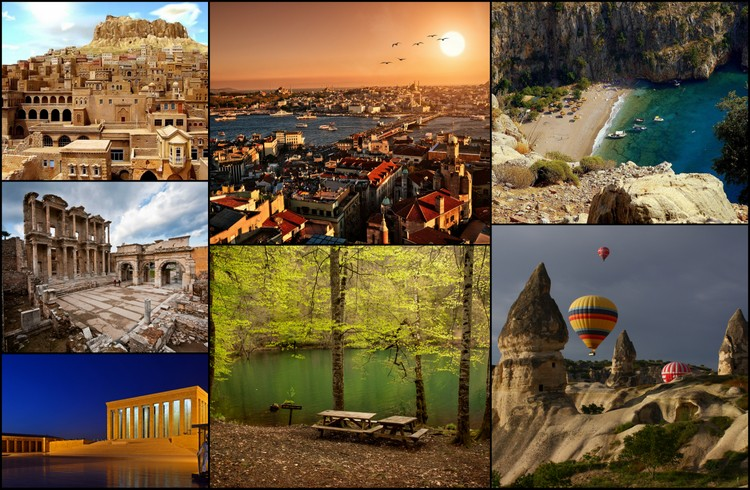

TÜRKİYE
Türkiye toprakları, binlerce yıldır farklı medeniyetlerin hayat bulduğu, dünyanın en önemli geçiş güzergahlarından biri. Anadolu’nun dört bir yanı bu topraklarda yaşayan farklılıkların izleriyle dolu. Tüm bu zengin tarihi geçmişiyle Türkiye, dünyanın en şanslı ülkelerinden biri. Türkiye’nin en güzel tarihi yerlerini keşfetmek isteyen binlerce yerli ve yabancı turist yeni seyahat planlarına hayat veriyor.